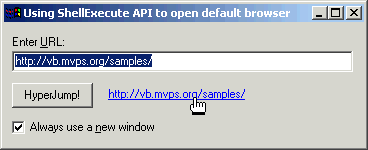

Would you like to put a hyperlink to your own web page right on the About box for your app? It's really much simpler than most folks might guess. One call to ShellExecute, passing the desired URL, fires up the default browser and jumps to the requested page. Below is an example that turns a Label control named lblLink into a hyperlink. One click on it by the user and they're whisked off to your (well, actually my ;-) page on the internet. Of course, this technique isn't limited to Label controls. You could call the HyperJump routine from the Click event of any control, or anywhere else in your code that it makes sense.
Option Explicit
Private Declare Function ShellExecute Lib "shell32.dll" _
Alias "ShellExecuteA" (ByVal hWnd As Long, ByVal lpOperation _
As String, ByVal lpFile As String, ByVal lpParameters As String, _
ByVal lpDirectory As String, ByVal nShowCmd As Long) As Long
Private Sub Form_Load()
With lblLink
.AutoSize = True
.Caption = "http://vb.mvps.org/"
.ForeColor = vbBlue
.Font.Underline = True
End With
End Sub
Private Sub lblLink_Click()
Call HyperJump(lblLink.Caption)
End Sub
Private Sub HyperJump(ByVal URL As String)
Call ShellExecute(0&, vbNullString, URL, vbNullString, _
vbNullString, vbNormalFocus)
End Sub
ShellExecute is amazingly flexible. For example, would you like to print a
document using the application it's associated with?
Public Function PrintDoc(ByVal DocFile As String) As Long
' Uses the "print" verb as defined in the registry
PrintDoc = ShellExecute(0&, "print", DocFile, vbNullString, vbNullString, vbNormalFocus)
End Function
This sample project also shows how simple it is to make a Label
control look and act like a standard hyperlink, and includes a handy-dandy pointing finger icon that you can set into the control's MouseIcon property to give it that full effect seen in popular browsers.

Another useful option offered is the ability to always open a document in a
new window, rather than the last window used. This is accomplished by calling
ShellExecute and passing the actual executable filename of the workstation's
default web browser. Which means I also provide code to extract that from the
registry.
And, finally, to accomplish some of this more easily, a native VB5 version
of the InStrRev was needed.
' **********************************************************
' This function should be commented out if running in VB6!
Private Function InStrRev(ByVal StringCheck As String, _
ByVal StringMatch As String, _
Optional Start As Long = -1, _
Optional Compare As VbCompareMethod = vbBinaryCompare) _
As Long
Dim nPos As Long
' Start from end if negative.
If Start < 0 Then
Start = Len(StringCheck)
End If
' Truncate StringCheck to maximum possible position.
If Start < Len(StringCheck) Then
StringCheck = Left$(StringCheck, Start)
End If
' Find last occurance of StringMatch.
nPos = InStr(1, StringCheck, StringMatch, Compare)
Do While nPos
InStrRev = nPos
nPos = InStr(nPos + 1, StringCheck, StringMatch, Compare)
Loop
End Function
' **********************************************************
Lots of bonus material with this one!